Snapshots of a folder and of a whole binder
A design round, built in the real plugin behind a switch (Settings, Snapshots, “Snapshots of folders and binders”, off by default). The pictures are the plugin on the demo vault's novel, its messy draft and its 5,000-note binder. Nothing here is on main.
What I'd build. One word, snapshot, for a note and for a folder. A folder's snapshot is everything in it as it stood: every note's file (text and properties), the folder notes, the order and nesting, and which files were there. It is taken in one click from a Snapshots button in the binder view's header, the same clock a note has. It opens in the note's own Snapshots dialog, grown to hold a book: the list at the side under “The binder now”, and beside it the book's contents in their order, with Show changes marking what is different now. A note in the contents opens as a note's snapshot does, with the same prose comparison.
On disk: one plain-text file per snapshot (direction A below), not a store of shared texts. It is one write, it is whole or it is not there, it opens in any text editor as the book in order, and a 5,000-note binder takes a tenth of a second. It costs disk (0.55 MB per snapshot of a 98,000-word novel), which thinning the automatic ones bounds.
Restoring is the risky part and is not built. What is real today never touches what is there: bringing back one note's text (through the note's own guarded path), making a gone note again, and “Make a binder from this snapshot”, which writes a new folder beside the binder. The whole-binder “Bring back...” screen is real and its numbers are real; its button changes nothing.
The way in
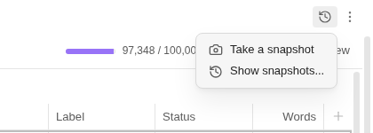
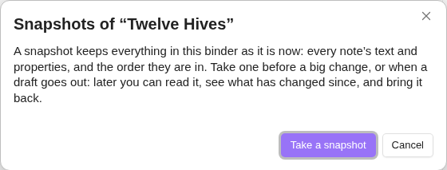
The same two items replace “Take a snapshot of every note...” in the folder's and binder's menus (the view's menu, a folder card or row, the file explorer), and there are two commands for the folder a binder view shows. “Snapshots of notes that are gone” and a note's “Rewrite...” stay as they are.
Seeing them
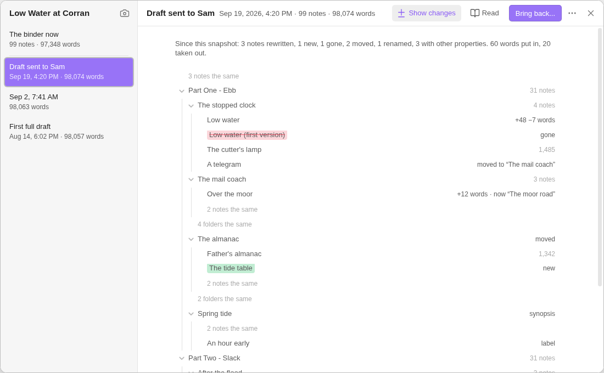
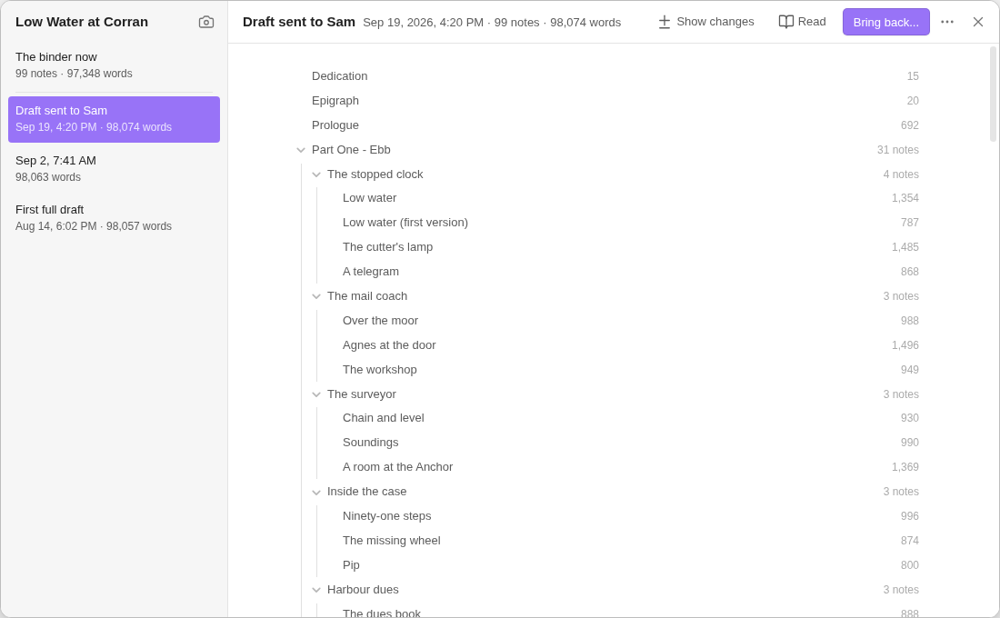
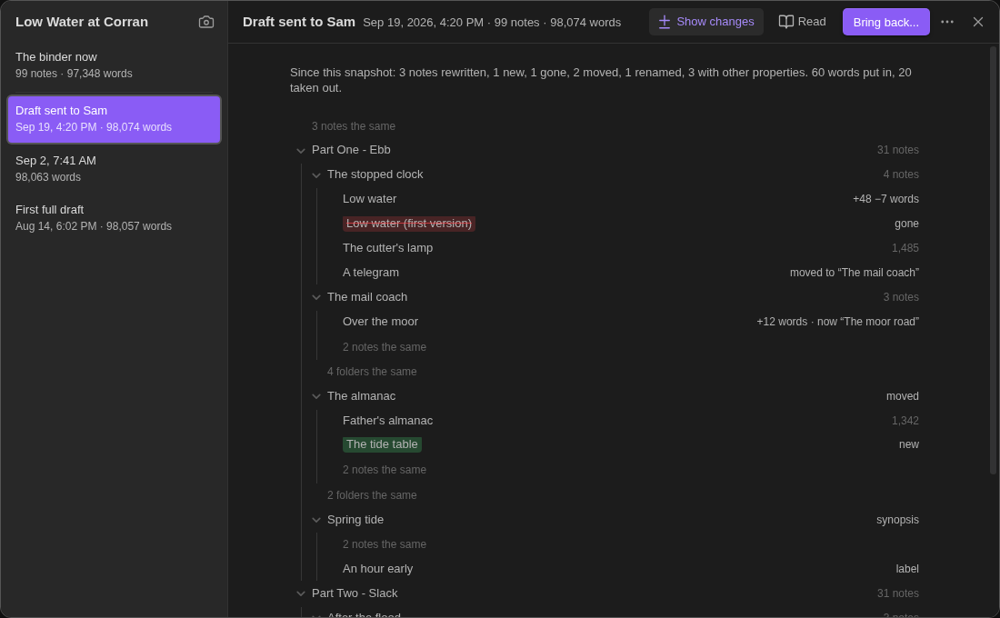
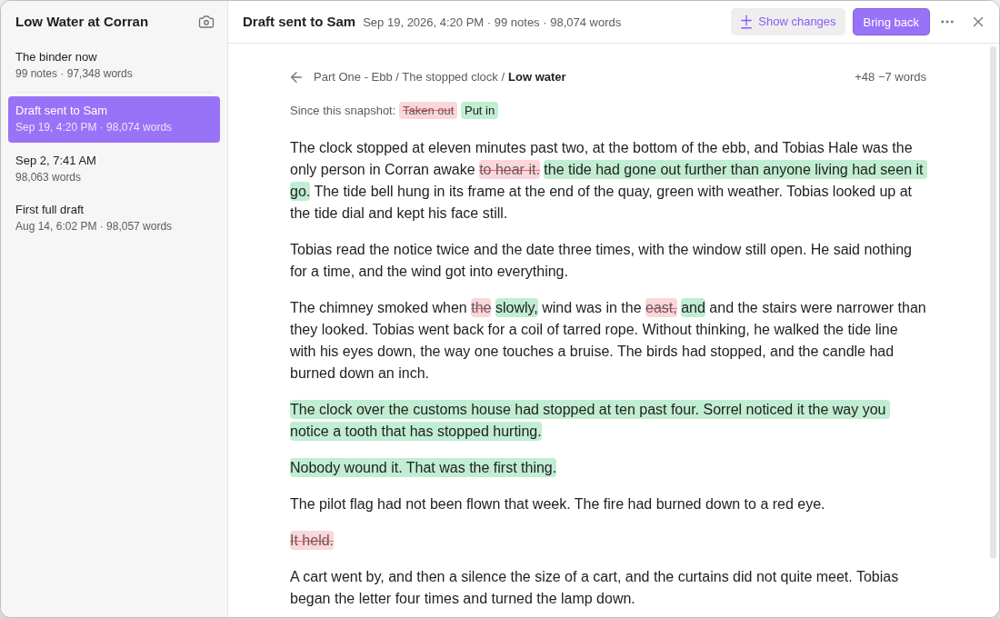
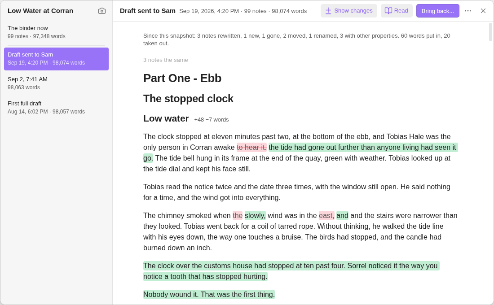
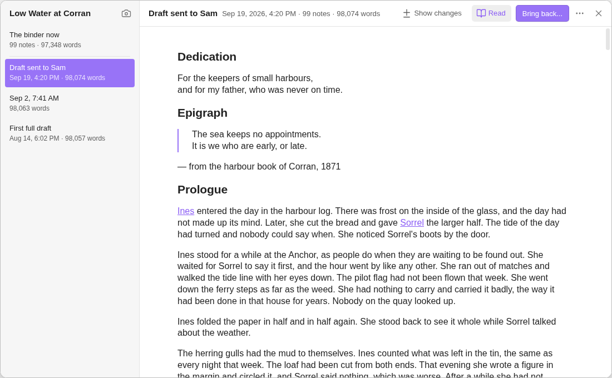
One snapshot, and three hundred
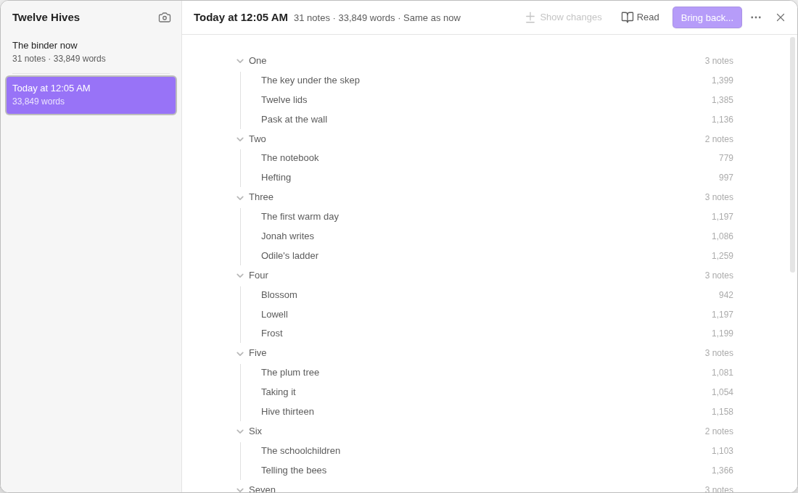
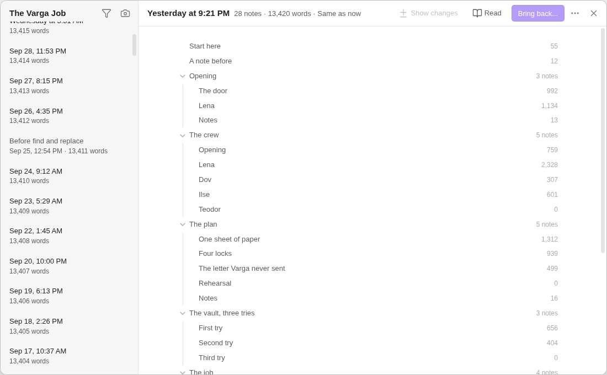
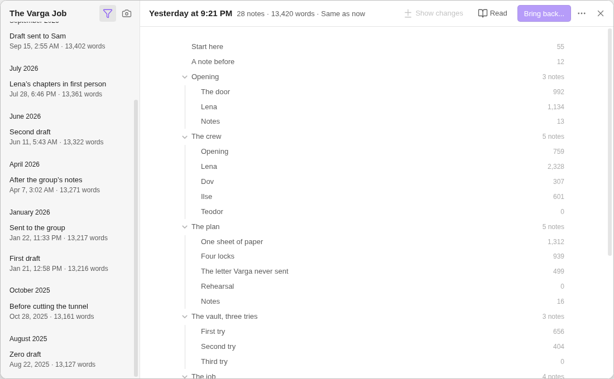
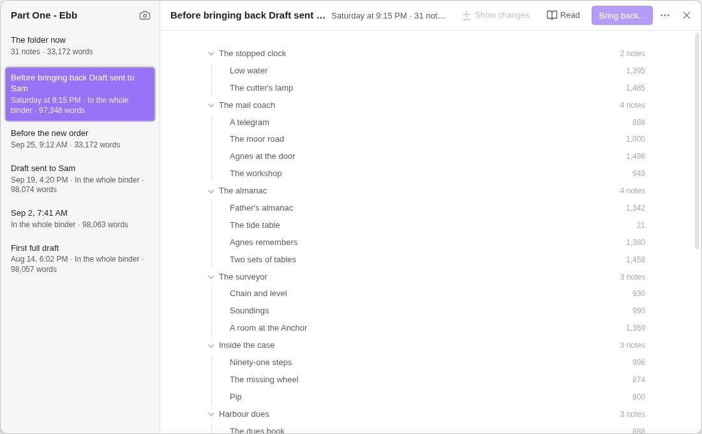
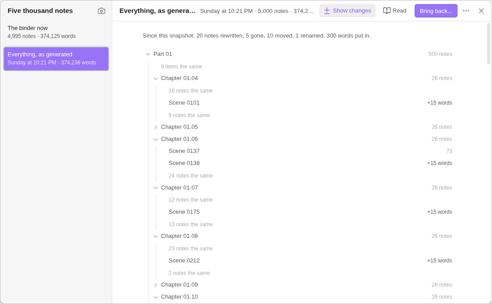
A phone and a tablet
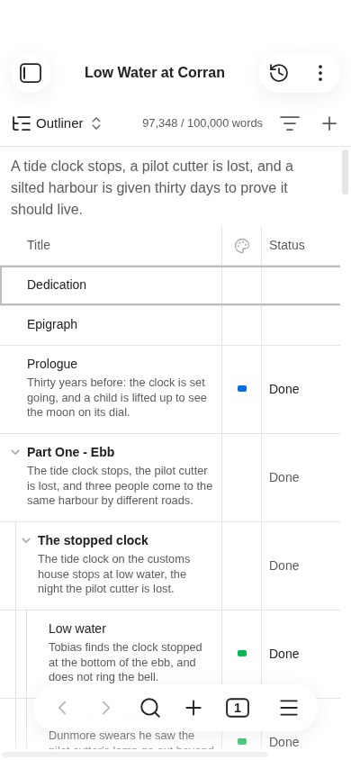
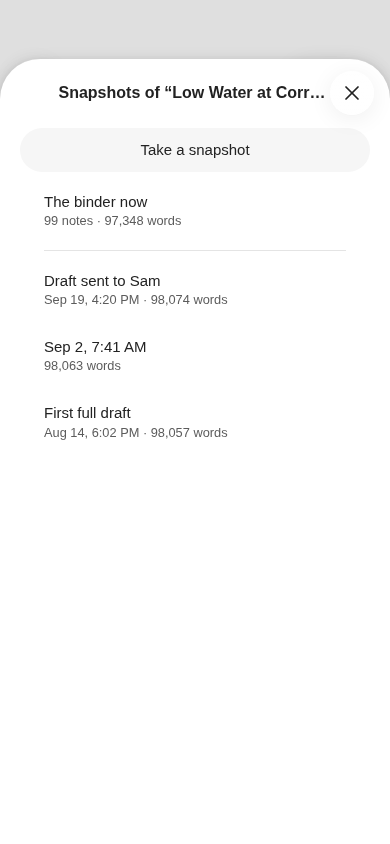
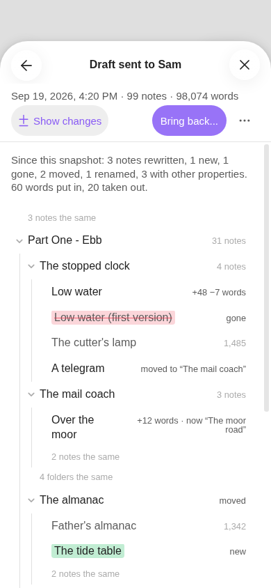
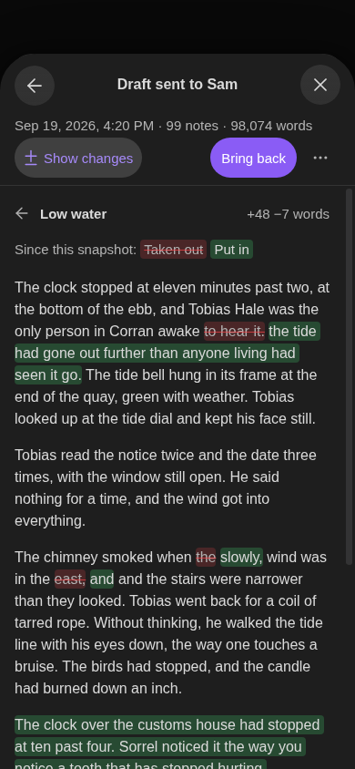
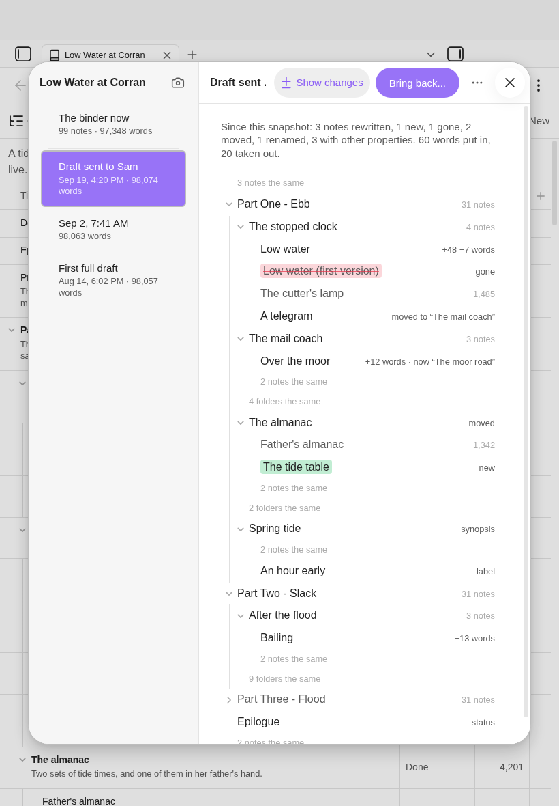
Bringing one back
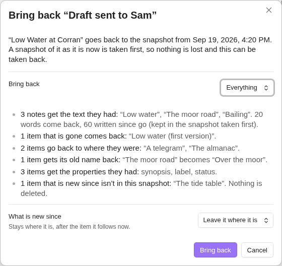
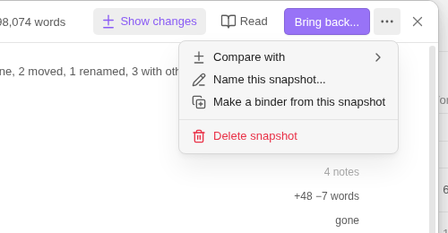
The rule. A snapshot of everything as it is now is taken first (unless one already holds exactly that). Nothing is ever deleted by a restore. Then, by scope:
| Bring back | What it does |
|---|---|
| Everything | Each note's file as it was (text and properties); notes and folders that are gone made again; moved and renamed ones put back (through Obsidian, so links follow); the order as it was. |
| The text of the notes | Text only, into the notes that are there. Nothing moves, nothing is made. |
| The order | Items that exist both times go back to where they were. No text changes. |
| One folder, one note | From its row: the same, for that part alone. (One note's text: real.) |
The hard cases, each with its behavior
| Since the snapshot | Bringing everything back |
|---|---|
| A note renamed | Followed without any id in the note, as git follows a file: the same path, else the very same text, else the note sharing most of its paragraphs (half or more). It gets its name back by Obsidian's rename, so links follow. Shown first: “‘The moor road’ becomes ‘Over the moor’”. |
| Moved to another folder | Moved back, to its place in the order. |
| Moved out of the binder | Binders doesn't look outside the binder. To the snapshot it is gone: it is made again from the snapshot; the one outside is not touched. |
| Merged into another | The note it was merged into gets its own text back; the merged-away note is made again. |
| Split in two | The first half gets its whole text back. The second half is “new since”: it stays (or goes to the folder, below), so its text is in two places, and the screen says so. |
| Deleted | Made again with its text and properties, at its place. |
| A note now has the name an old one had | The note that is there keeps its name. The one coming back is named by counting on (“Arrival 2”), and the screen says which. |
| A folder is gone | Made again, with its folder note, before what goes in it. |
| Notes and folders new since | Never deleted. They stay where they are, after the item they follow now (the default), or go to one folder, “Since Draft sent to Sam”, at the end. |
| A Longform project | Texts as above; the order is written to longform.scenes and nothing else in the index note. |
| A binder in a newer format | Read only: snapshots can be read, not taken or brought back. A snapshot file in a newer format is listed, says why, and is never opened, renamed, thinned or deleted. |
| A note open with unsaved typing | Saved first, so it is in the “before” snapshot; then replaced through its editor, as one change Undo takes back. |
| An outside edit arrives during it | Each note is replaced only if it still says what the “before” snapshot holds. One that doesn't is left, and listed at the end. |
| Interrupted half-way | The plan is written down before the first step, as a file beside the snapshots, and every step is safe to make twice. The next time the binder is opened: “Bringing back ‘X’ was interrupted”, with Finish and Put it back as it was. |
| Undo | The view's menu offers “Undo: bring back ‘X’”, which brings back the “before” snapshot. That is itself an ordinary restore, so it is as safe as one. |
On disk: two directions, both built
The dialog is the same either way. This is the one place with a real choice, so both are in the build and both were measured.
| A. One file per snapshot (my pick) | B. Shared texts | |
|---|---|---|
| What is written | One plain-text file: a few properties, then every item in order, each note's file whole under a line that says what it is. | The same file without the notes' text (an index), and each distinct note file once, named by its fingerprint, in Snapshots/Texts. |
| Can | Be taken in one write. Be whole or not there. Be opened by hand and read as the book. Be copied, mailed or deleted as one thing. | Keep a year of daily snapshots in about 13 MB. Show cheaply which snapshots a given note changed in. |
| Can't | Share anything: every snapshot costs the book's full size. | Be read by hand as a book (an index and files named 3f9a2c…). Be whole unless every text it names has arrived: a sync delivers the index first. Be deleted without a pass that removes texts nothing names any more, which is code that deletes files. |
| Costs | Disk. Obsidian Sync's Standard plan carries files up to 5 MB: a snapshot of a binder past about 900,000 words would stay on the device (the 5,000-note binder's is 3.2 MB). | Time and file count: 134 files and 38 s for the novel's first snapshot, 5,002 files and 4 minutes for the big binder's, on this machine under load. |
What a snapshot file looks like (A)
Low Water at Corran/Snapshots/2026-09-19 16.20.05 Draft sent to Sam.binder-snapshot --- binder-snapshot: 1 binder: "Low Water at Corran" of: "" taken: 2026-09-19T16:20:05 notes: 99 words: 98074 --- Everything in “Low Water at Corran” as it stood, in its order. Each item starts at a line of ===== that says what it is and how long; a note’s file follows, exactly as it was. ===== "Low Water at Corran.md" | binder note | 6296 characters | 0b16f77849df045b ===== --- binder: 1 contents: - Dedication … ===== "Prologue.md" | note | 3682 characters | 97be6938536eb0d9 ===== --- synopsis: Thirty years before: the clock is set going, … --- The clock was carried up from the quay on a door… ===== "Part One - Ebb/" | folder ===== ===== "Part One - Ebb/Part One - Ebb.md" | folder note | 231 characters | f36c52fb4c7a7096 ===== ===== "Part One - Ebb/The stopped clock/Low water.md" | note | 7010 characters | 8237ba997f642c0f ===== …
- Where: in the binder's hidden
Snapshotsfolder, under the folder's own path, beside its notes' snapshot folders. The binder's are at the top. Named as a note's snapshot is: when, then the name. Naming one renames its file; the file's content is never changed. - It is read by the lengths, so nothing a note says can be taken for the next item. Each item carries a fingerprint of its file. This build reads by length and doesn't yet check the fingerprints; the finished reader checks each one and says which items of a file changed by hand no longer match.
- One Binders took itself ends in
.auto.binder-snapshot. Only those are ever thinned. Giving one a name makes it yours. binder-snapshot: 1is its own format number. An older Binders lists a newer file and refuses it.- Files that aren't notes (pictures, canvases, PDFs) are listed with their size, not copied.
- The folder
sample/beside this page has the novel's three snapshots as A wrote them (“A one file”), and the same three as B did (“B shared texts”). Open one in a text editor.
Numbers
Desktop, headless Obsidian, with a whole-suite run and two developers on the same machine, so read them as upper bounds. The novel is “Low Water at Corran”: 99 scenes, 133 notes with folder notes, 98,057 words, 534 KB of text.
| A. One file | B. Shared texts | |
|---|---|---|
| Take a snapshot of the novel, the first time | 18 ms · 1 file · 550 KB | 38 s · 134 files · 552 KB |
| Take another after a small edit | 14 ms · 550 KB | 0.6 s · 2 files · 26 KB |
| Thirty days, three scenes worked on a day, one snapshot a day | 16.7 MB · 30 files | 1.1 MB · 128 files |
| The same for a year, nothing thinned | about 203 MB · 365 files | about 13 MB · 1,550 files |
| A year, automatic ones thinned to one a week after two weeks | about 36 MB | about 13 MB |
| What changed since: read the binder now, read the snapshot, compare | 6 + 11 + 10 ms | 12 + 58 + 66 ms |
| 5,000 notes (374,000 words): take the first | 65 ms · 3.2 MB | 246 s · 5,002 files |
| 5,000 notes: take another after a day's work | 105 ms · 3.2 MB | 0.5 s · 22 files · 0.8 MB |
| 5,000 notes: read now, read the snapshot, compare | 163 + 36 + 99 ms | 168 + 16 + 331 ms |
| 5,000 notes: the dialog open with the changes drawn | 0.6 s | not shot |
| 300 snapshots of the messy draft (13,400 words): taken, on disk, the dialog open | 2.1 s · 23 MB · 1.0 s | not run |
Trusting the format. A binder made from the novel's first snapshot was compared with the files that snapshot was taken of: 133 of 133 notes byte for byte the same, the scenes in the same order, and the copy is itself a binder. That holds for A and for B. Through the dialog, once each: one note's text brought back is the snapshot's text and the text it replaced is a snapshot of the note; a deleted note made again is byte for byte what it was; naming renames the file and changes nothing in it; a second snapshot of an unchanged binder isn't taken. The note snapshots' own 56 tests still pass with the round's code in.
Found on the way. A notice (“Brought back the text of…”) sits over the dialog's buttons for its six seconds, here and in the note's dialog: a second click lands on the notice. Making 133 notes through Obsidian's vault took 30 s here (the binder store looks at each one as it arrives). A restore that makes or moves many files needs to say how far it has got, and the store should be told once at the end. And vault.read drops a byte-order mark: the finished thing reads bytes through the adapter, so a note with one comes back with it.
The seven questions
1. What a snapshot of a folder is, on disk
Direction A, above. Today's “every note” snapshots stay exactly where they are, as each note's own snapshots: they hold text only (no order, no properties, nothing of a note that was blank) and their times differ note to note, so I would not dress them up as snapshots of the binder. The item that makes them is replaced. If Binders is gone, a snapshot is still a text file with the whole book in it.
2. Taking one
- One click, no question. The notice says what it took: “Took a snapshot of ‘Low Water at Corran’: 99 notes, 98,057 words.” A name is given afterwards in the dialog (“Name this snapshot...”), as for a note.
- “Nothing has changed” means the same items in the same order and every note's file the same, against the folder's newest snapshot. Then none is taken and the notice says when the last one was. To build: naming an unchanged state names that last snapshot if it has no name, instead of writing a twin.
- Unsaved typing goes in: open editors and the manuscript are saved first (built). To build: a synopsis or an outliner cell being typed is committed too.
- Automatic, at 1.0: before bringing a snapshot back, and before find and replace across the manuscript when that exists. Later, and off by default: one each day the binder changed (one dropdown in settings), and a checkbox in the export window, “Take a snapshot of the book as exported”. Not before a merge or a split: those already keep the text twice. Not before an export by default: an export writes to no note.
- Thinning touches only the ones Binders took: all of them for two weeks, then one a week, moved to the trash as Obsidian's setting says. One you took, or named, is never removed.
3. Seeing them
Shown above. Two snapshots are compared through “Compare with” in a snapshot's menu (built); the summary line then reads “From this snapshot to ‘Second draft’”.
4. Bringing one back
The table above. It is the part to prove before anything else is finished.
5. The way in
- Built: the header button, the menus, two commands, a phone and a tablet, the list as a listbox and the contents as a tree (arrow keys, Enter, every row named for a screen reader with what is different about it: “Over the moor, +12 words · now ‘The moor road’”). Checked by script, not yet with a screen reader.
- To build: the inspector's Snapshots list for a folder and the binder, as it has one for a note (rows open the dialog on that snapshot); in a note's own dialog, one line at the foot, “In snapshots of the binder...”, that lists the binder snapshots in which this note's text differs.
6. What “extremely good versioning” should mean here
| From | Taken | Left |
|---|---|---|
| Scrivener | The word, the per-document snapshot it already inspired, and “take one before you do something drastic”. | Per-document only (its writers' standing complaint, and the reason for this round). Zipped backups on close: opaque, and not Obsidian's way. |
| Google Docs, Word | Named versions as the ones that matter; automatic ones quieter and thinned; “restore” that keeps the present. | A timeline of every keystroke: Obsidian's File recovery and Sync already hold recent states of each note. |
| Ulysses | Browsing a version as the text it was, and bringing back part of it. | The full-screen time-travel look. |
| Time Machine | Opening a moment and seeing the whole thing as it stood. | The cosmos. |
| git, Obsidian Git | Following a renamed note by its text, with no id in it. “What changed” as a list of files, then one file's changes. | Commits, branches, merges, a staging step, and any wording of theirs. Binders sits beside git: a snapshot is one new file, never rewritten, so it adds one clean file to a commit and git packs the lot small. |
| File recovery, Sync history | The dialog's layout, already borrowed. | They cover one note for a while. Neither knows the binder's order, which notes existed, names, or what changed across the book. |
Branching doesn't belong, now or later: two live versions of a book need merging, and merging prose is the thing git users lose writing to. “Make a binder from this snapshot” gives the writer the other ending as a second binder they can see, and “Compare with” covers looking at two states.
7. Cost and order
- Touches: three new modules (
set-text.tspure,sets.tsvault side,view/sets.ts), and small hooks in the binder view's header, the folder menus, the commands, settings, and the snapshots module (the prose comparison and “bring back a text” made shareable). The names are the round's and want choosing. - No new undocumented internals. The dialog reuses the File recovery classes the note's dialog already uses, with the same fallback.
- To finish alongside: a folder renamed or moved must take its own snapshot files with it (today's follower moves a note's files and a folder's folders; a folder's files are new); the file explorer, search, word counts and export already ignore everything under
Snapshots.
Questions for you
Finishing, in steps that each leave something usable
| Step | What a writer gets | Size |
|---|---|---|
| 1. Take, see, compare | What is in the pictures, finished: the button, taking, the list, contents, changes, one note, read, compare with another, one note brought back, a binder made from a snapshot, the inspector's list, names kept when a folder is renamed or moved, Longform, a newer format refused, exact bytes. Docs and the format page. | About the size of the note snapshots' own tests again (their spec file is 1,700 lines). One session. |
| 2. Bring back the text, and the order | The two scopes that make and move nothing. The “before” snapshot, the plan written down, finish or put back after an interruption, undo. | One session. The restore's safety net is built here, on the easy scopes. |
| 3. Bring back everything | Notes and folders made again, renames and moves put back, properties, “new since”. | One to two sessions. The risky one. |
| 4. Automatic | Daily when changed, thinning, the export checkbox. | Half a session. |
How it is tested. One table of cases drives everything: for each row of “the hard cases”, a spec changes the binder that way, restores, and compares the vault with a copy made when the snapshot was taken, byte for byte for every file the snapshot holds; then restores the “before” snapshot and compares with a copy of the present, so no word of the present is ever lost. The same cases run with an outside edit mid-way, with Obsidian closed mid-way, and on a phone. The pure parts (the file read back, following renamed notes, what changed) are unit tests.
Real in this build: the switch, the button, taking (both ways of keeping), the list, contents, changes, compare with another snapshot, one note, read, naming, deleting, bringing back one note's text, making a gone note again, making a binder from a snapshot, the “Bring back...” screen and its numbers. Inert: that screen's button. Not built: the inspector's list, thinning, automatic snapshots, anything in “to build” above.